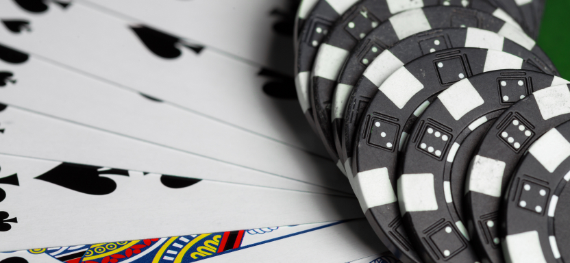
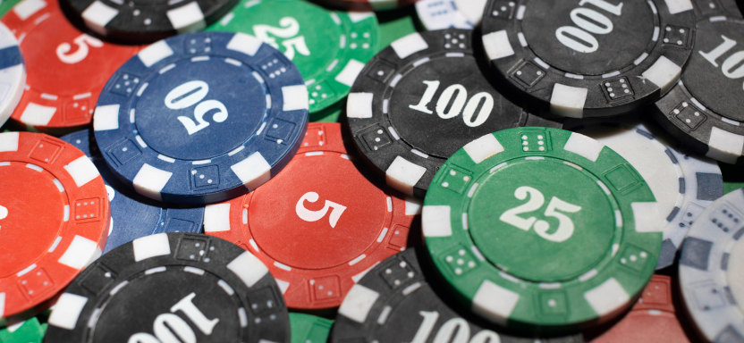
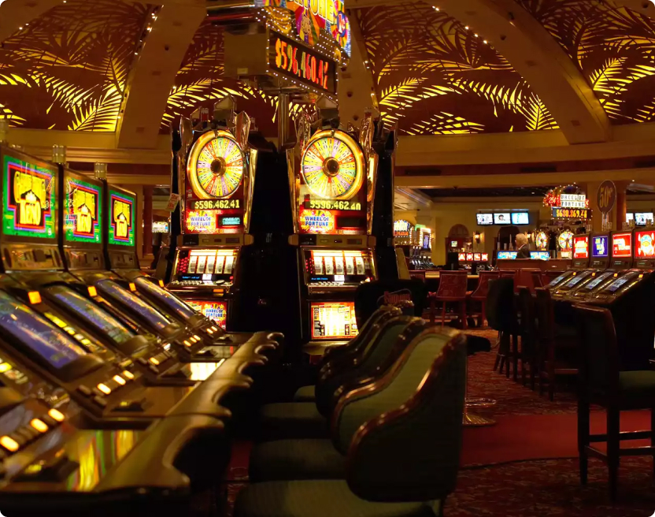
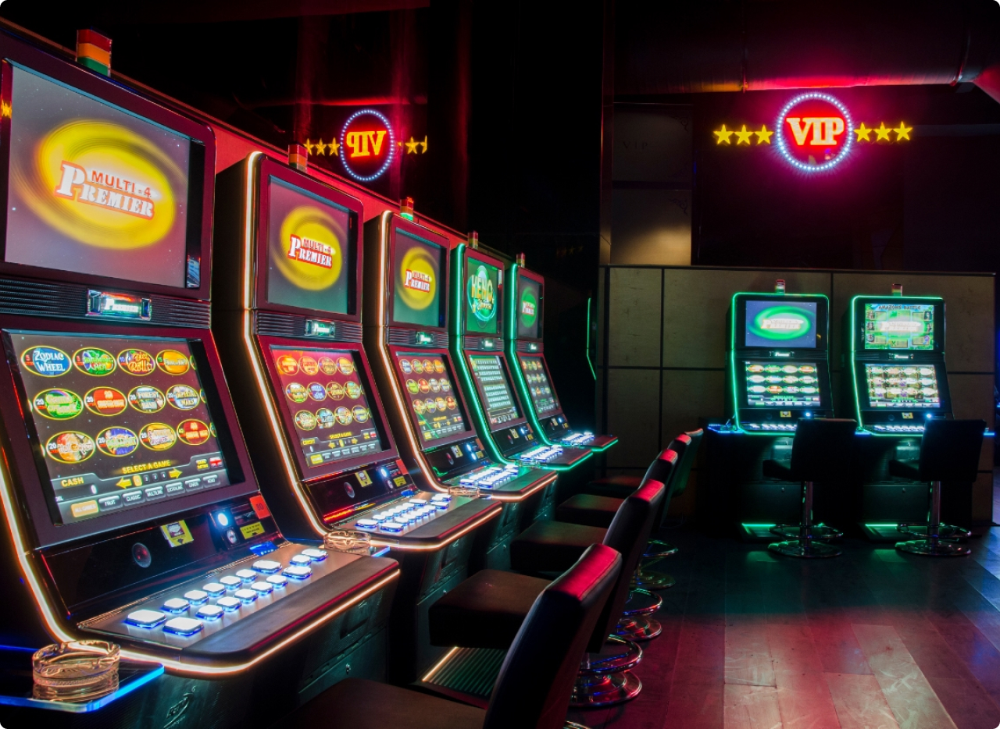

Onze spellen zijn bedoeld voor een VOLWASSEN publiek ouder dan 18 jaar. Klikken
de Geaccepteerd om uw leeftijd te bevestigen.
Gokautomaat verhuur in Nederland
Wij bieden gokautomaten verhuur in Nederland voor elk evenement. Onze gokautomaten zorgen voor een
onvergetelijke sfeer en leuk entertainment voor volwassenen en kinderen.
In Nederland is het plaatsen van speelautomaten wettelijk geregeld en is een wettelijke vergunning
vereist. We zijn er trots op dat we alleen samenwerken met vertrouwde en legale leveranciers van
gokautomaten, wat een belangrijk kenmerk van ons werk is. In onze verhuur vindt u de beste
speelautomaten van marktleidende fabrikanten die voldoen aan de hoogste kwaliteits- en
veiligheidsnormen.
Onze slots zijn uitgegroeid tot de beste entertainmentbedrijven in Nederland dankzij onze brede selectie
van spellen die passen bij de smaak van elke gamer, en omdat we onze collectie van de meest populaire en
nieuwe spellen voortdurend uitbreiden.
We bieden ook een betrouwbare en snelle klantenservice, evenals aantrekkelijke huurvoorwaarden, wat onze
service tot de beste in zijn categorie maakt. We volgen voortdurend de innovaties van de game-industrie
om onze klanten alleen de beste selectie gokautomaten te bieden.
Verhaal
De geschiedenis van speelautomaten in Nederland gaat tientallen jaren terug. Van de eerste legale slots
die in 1976 in casino's verschenen tot de hightech games van vandaag die een exclusieve spelervaring
bieden.
De afgelopen jaren zijn gokautomaten in Nederland erg populair geworden en hebben ze een leidende
positie ingenomen in de ranglijst van entertainmentbedrijven. Ze zijn nu zeer winstgevend en zijn een
integraal onderdeel geworden van de game-industrie.
Door de legalisering van gokautomaten zijn er veel vergunninghoudende aanbieders van gokautomaten die
ernaar streven om de beste spellen en de beste service aan te bieden. Ons bedrijf werkt samen met
dergelijke leveranciers. Wij garanderen onze klanten alleen legale gokautomaten van de beste fabrikanten
die voldoen aan de hoogste kwaliteits- en veiligheidsnormen.
De gokautomaten van vandaag zijn onvergelijkbaar met eerdere modellen. Ze zijn betrouwbaarder, veiliger
geworden en gericht op het gemak van de spelers. Onze gokautomaten bevatten veel verschillende spellen
en bevatten enkele van de meest populaire spellen op de markt. Hierdoor nemen we een leidende positie in
op de ranglijst van speelautomaten in Nederland.


Spelregels

In Nederland zijn er legale speelautomaten die onder staatscontrole staan. Ze zijn beoordeeld en
geselecteerd uit de beste gokautomaatfabrikanten.
De spelregels in dergelijke machines zijn eenvoudig en transparant. De speler moet geld in de machine
storten en een spel uit de voorgestelde lijst selecteren. Afhankelijk van welk symbool op de rol
verschijnt, kan de speler geld winnen of verliezen.
Het is belangrijk op te merken dat spelers ouder dan 18 jaar moeten zijn om in aanmerking te komen voor
het spelen van legale gokautomaten. Ze hebben ook de mogelijkheid om limieten op hun weddenschappen in
te stellen om mogelijke financiële risico's te vermijden.
Soorten spellen
Videopoker
Videopoker is een gokspel dat in de meeste landen, waaronder Nederland, ook legaal is. Casino's
gebruiken videopokermachines, die ook hun eigen beoordeling hebben.

Klassieke speelautomaten
Klassieke gokautomaten zijn een van de meest populaire vormen van gokken, die in de meeste landen ook
legaal zijn.